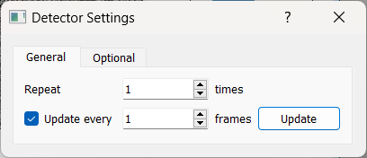
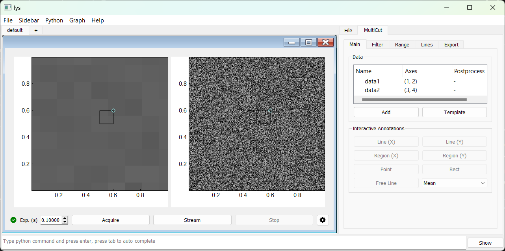

Detector GUI
Creating a Detector GUI
To create a detector GUI subwindow:
Launch lys and open the
proc.pyfile (press Ctrl+P).Add the following code to define a class for the detector GUI subwindow and save it (press Ctrl+S).
from lys.widgets import LysSubWindow
from lys_instr import dummy, gui
class Window(LysSubWindow):
def __init__(self):
super().__init__()
detector = dummy.MultiDetectorDummy(frameShape=(256, 256)) # Create the detector instance
detectorGUI = gui.MultiDetectorGUI(detector) # Create the detector GUI
self.setWidget(detectorGUI) # Embed the detector GUI in the lys subwindow
self.adjustSize()
Calling Window() in the lys command line launches the GUI subwindow as follows:
You can change the exposure time using the spin box or by direct input, then click “Acquire” for a single shot, “Stream” for continuous acquisition, or “Stop” to halt the process.
The indicator at the bottom left shows the connection status—green for a successful connection, and red for a disconnected or error state.
Clicking the “Settings” button opens a dialog.
{kind=link}
Within the dialog, you can use the spin box next to “Repeat” to set the number of frames per acquisition and the spin box next to “Update every” to change the display refresh rate. You can also click the “Update” button at any time to refresh the display manually.
Other Frame and Index Dimensions
Frame: The unit of data captured per acquisition
Index: The position of each frame within a run that acquires multiple frames
Frames can have any number of dimensions (1D, 2D, 3D, etc.), but each GUI display can show only 1D (spectrum) or 2D (image) data.
By default, the index shape is (), meaning a single frame per run.
When either the index or frame shape is multi-dimensional, the resulting data may require custom display logic.
To visualize such data, you can create multiple displays to show different 1D or 2D cuts. The MultiCut utilities in lys provide tools for cutting and customizing multi-dimensional data display.
The detector GUI includes default templates for common multi-dimensional layouts.
For example, if each run produces a 9×9 grid of 256×256 frames, the full data shape is (9, 9, 256, 256) (4D):
from lys.widgets import LysSubWindow
from lys_instr import dummy, gui
class Window(LysSubWindow):
def __init__(self):
super().__init__()
detector = dummy.MultiDetectorDummy(indexShape=(9, 9), frameShape=(256, 256))
detectorGUI = gui.MultiDetectorGUI(detector)
self.setWidget(detectorGUI)
self.adjustSize()
The resulting GUI window appears as follows:
The default 4D data display template consists of two linked images: the left image shows the mean over the last two axes (frame axes) for the region selected in the right image, and the right image shows the mean over the first two axes (index axes) for the region selected in the left image.
Manually Configuring GUI Display
The above display layout can also be configured manually using the MultiCut tab: On the Main tab in the MultiCut tab:
(Clear the template) On the Main tab, right-click the “data1” and “data2” items (created by the default template) and select “Remove” to delete them.
Click Add and redefine “data1” by selecting the frame axes 1 and 2 for display:
{kind=link}
Click and drag to select the left portion of the display area (approve the dialog if prompted):
Similarly, add “data2” and select the index axes 3 and 4 for display:
{kind=link}
Select the right portion of the display area (approve the dialog if prompted):
Select the left image by click on it, then click Rect on the Main tab to add a rectangle selector:
Select the right image by click on it, then click Rect on the Main tab to add a rectangle selector:
This procedure reproduces the template layout for 4D data. This setup allows interactively moving and resizing the rectangle regions in one image to update the averaged display in the other image.
You can configure custom display layouts for data with other dimensions in a similar way. See lys documentation on MultiCut for more details.